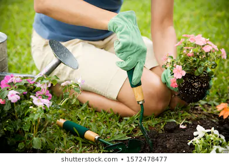
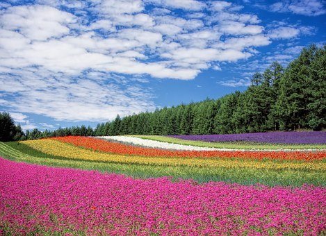
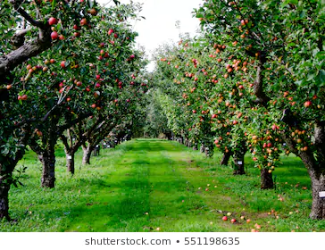
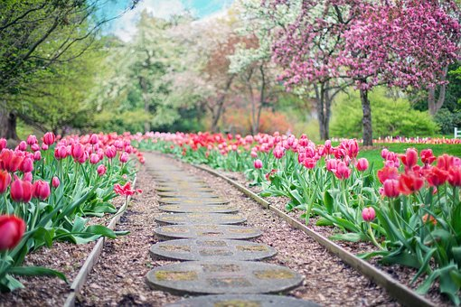
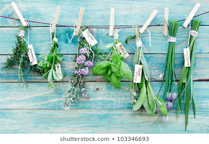

Building your Garden

Flowers
Choosing flowers for your garden depend on three things.
How much Sun does it recieve, how much water/rain, and what colors do you want?

Click link for more information
Apples
There are many different types of Apple trees and all trees need something to crosspolinate with in order to bare fruit. A minimum of three trees are needed in order to polinate.

Click link for more information
Colors
Gardens have a variety of colors, and the best part you get to control that part. Some people love a variety of colors, while others want specific colors. Feel free to choose what makes you happiest. Gardens can also have themes, statues, water features, and more. Be creative, and willing to get your hands dirty!

Click Link for more information
Herbs
Herbs are great to add to a garden or keep indoors for a small garden. Herbs can be used in cooking, tea making, and even help keep bugs away.
